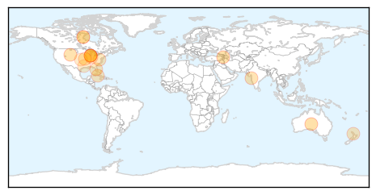
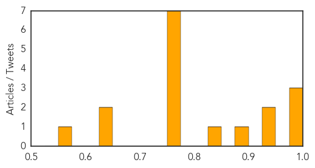

Measles
30-Day Web Trend
0 alerts, 0 warnings

30-Day Twitter Trend
1 alerts, 0 warnings

Article Locations

Article Confidences

Top Articles:
- 0.947
- Our Opinion: Opting not to vaccinate puts others at risk
- 0.888
- Sudan: UNICEF launches measles vaccination campaign after outbreak
- 0.870
- 2 new measles cases confirmed in Metro Vancouver
- 0.870
- 2 new measles cases confirmed in Metro Vancouver
- 0.819
- Burnaby high school student latest confirmed measles case: Fraser Health - BC
- 0.816
- Two more measles cases pop up in Metro Vancouver
- 0.791
- Mandatory vaccination will protect all citizens
- 0.791
- Suspected measles case identified at Vancouver high school
- 0.791
- Suspected measles case identified at Vancouver high school
- 0.705
- Vancouver School Board sets up immunization clinic after student contracts measles
- 0.702
- Two million measles vaccines delivered to Sudan for mass immunisation
- 0.687
- Laos introduces vaccine to protect children from Japanese encephalitis
- 0.641
- Get vaccinated
- 0.572
- Four Burnaby Christian school students infected with measles
- 0.530
- Updated: More measles cases linked to Air China flight
Top Tweets:
-
No tweets found for Apr 02, 2015
Influenza
30-Day Web Trend
3 alerts, 0 warnings

30-Day Twitter Trend
3 alerts, 0 warnings

Article Locations
Article Confidences
Top Articles:
- 0.999
- Quadrivalent flu vaccine protect against more strains
- 0.988
- Charitable Health Gift: $600,000 in Flu Vaccines to Armenia
- 0.975
- Dog flu reaches 'epidemic' levels in Chicago
- 0.937
- USGS Release: Circulation of Highly Pathogenic Avian Flu in North American Birds (4
- 0.926
- Circulation of Highly Pathogenic Avian Flu in North American Birds and Risk to Humans
- 0.880
- 32-yr-old woman succumbs to H1N1, eighth in last 5 days
- 0.829
- INFECTIOUS RESPIRATORY DISEASE THREATENS CHICAGO DOGS
- 0.759
- Local vets warning about the concerns, signs of the dog flu
- 0.751
- April 1, 2015 Archives
- 0.751
- April 1, 2015 Archives
- 0.751
- April 1, 2015 Archives
- 0.751
- April 1, 2015 Archives
- 0.751
- April 1, 2015 Archives
- 0.750
- Birds Banned At Spring Swapping Days, After Avian Flu Outbreak In Nearby County
- 0.638
- A Virus In Your Mouth Helps Fight The Flu
- 0.638
- A Virus In Your Mouth Helps Fight The Flu
- 0.559
- PetSmart Closes Three Chicago-Area PetsHotels to Protect Pets from Spread of Canine Influenza
Top Tweets:
- 0.501
- Avian Flu Diary: Seroprevalence Of Influenza Viruses In Cats http://t.co/VdKXnxgDD9